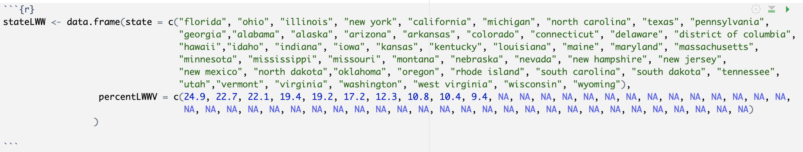
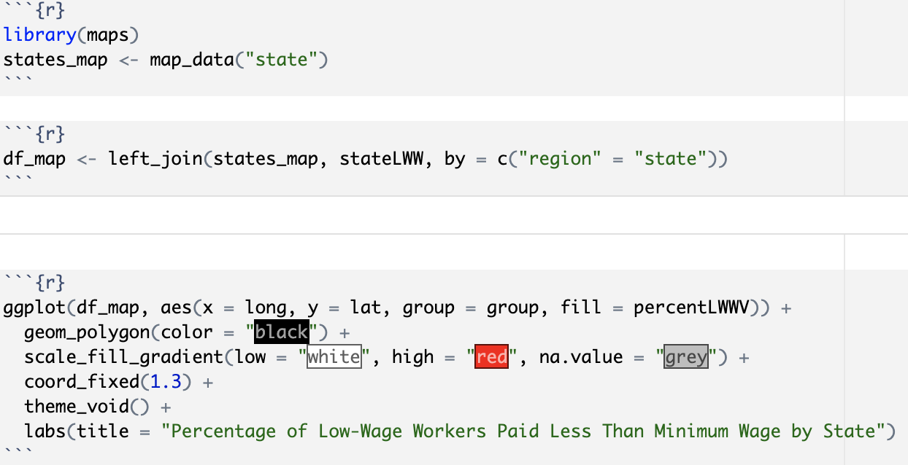
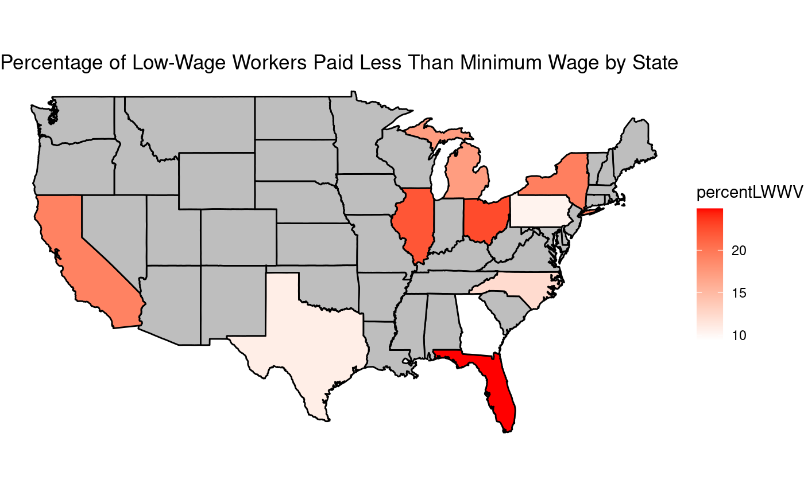

Below is a data Visualization I made using the maps package in R and merging the polygon data with the state dataframe I entered
from the article. It shows a heatmap of the united states and which areas have the highest percentage of workers in each
state's low-wage workforce who report being paid less than the minimum wage (NOTE: the article only included the top 10 states
for minimum wage violations so a lot of the states have NA values)



Was the gathering of this data ethical?
Yes, the gathering of this data was most definitely ethical. The EPI uses data from the Current
Population Survey Outgoing Rotation Group which is monthly survey conducted by the U.S. Census
Bureau for the Bureau of Labor Statistics. Every household interviewed is not only required to give
informed consent but the enitre survey is voluntary. The collection then is a random sample of the
entire set of households for eight months and then a break for four months, and then the other set
for eight months. The sampling method also makes sure to sample the data in a way that is represntative
of the US population. Also, the Bureau ensures the safety and protection of the data through collecting, storing,
and sharing it extremely securely. I believe that the US Census Bureau backs itself up pretty well in terms of collecting
data ethically.
Are there ethical and unethical uses of this data?
Yes. I believe the amount of ways that this data could be used unnethically out number the ethical ways! The Economic Policy
Innstitute does a great job communicating it findings and making a call to action for the discrimination and minimum wage
violations for more low income groups. I beleive the most obvious way this data can be used is by not communcating its full
findings or leading readers to conclusions that are not true. To be specific, I beleive an unethical use of this data would
be if an enforcement agency only used this report or this data to target small buisinesses instead of large scale operations
an allowed them to keep making minimum wage violations.
How can we conclude if data is being used ethically?
I believe we can conclude if data is being used ethically if the entirety of the collection, modeling, and communication of
the data coincides in its entirety with the theme of its research and if the entirety of the data is being reported. If there
is a strong research question or argument that is supported by the entirety of data that was collected ethically, then most
likely the conclusions reached from that data ethically align.
What responsibilities do data scientists have to society?
Data scientists have a responsibility to society to collect data ethically, protect it securely, and ethically and accurately
distribute their findings in a timely manner, and constantly update their findings. I believe my last point is very important
because trends change very rapidly and to not update data and models could lead to extremely misleading information that does
not reflect current societal trends.